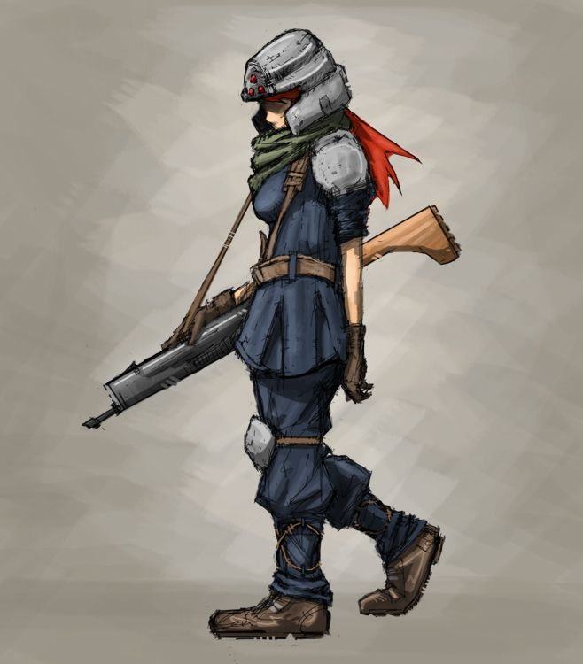

Home-Monstruos-Soldado Raso
Soldado Raso

×

Los soldados rasos son monstruos sin debilidades. Suelen aparecer en Midgar, aunque dependiendo del punto de la historia aparecen en otros lugares.
Predominan en aquellos lugares en los que esté Shinra, como el edificio Shinra o allá donde Rufus.
Aunque en la imagen se muestre con un traje azul y un casco blanco, los soldados tienen distintos vestuarios dependiendo de su rango:
soldado, capitán de tropa, capitán, general, coronel, terratiniente, etc.
| Nivel | 5 | 9 | 20 | 40 | |
|---|---|---|---|---|---|
| Experiencia | 50 | 90 | 190 | 375 | |
| Vida | 200 | 400 | 1900 | 5000 | |
| Magia | 40 | 60 | 120 | 400 | |
| Movimientos | Sable especial | Nada | Piro 3 | ||
| Objetos | Poción | Sable Soldado Raso | |||